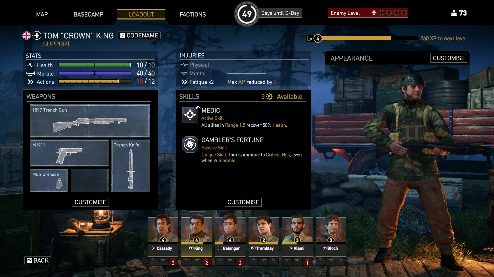
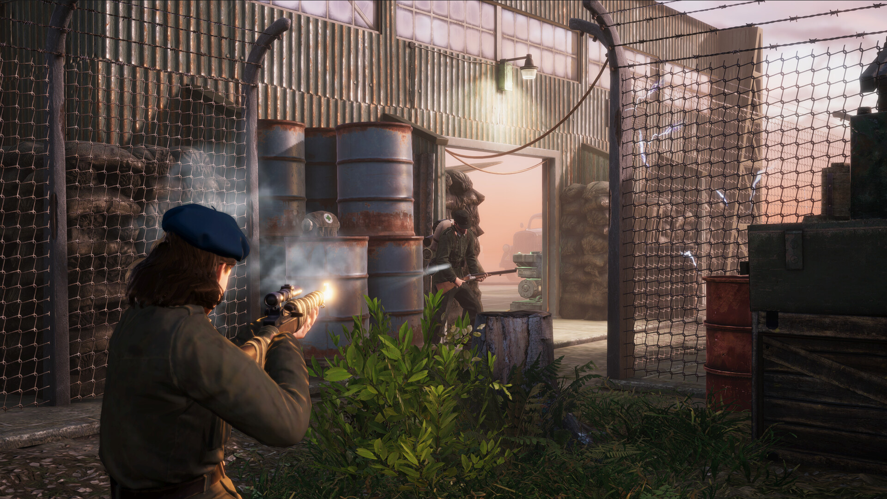
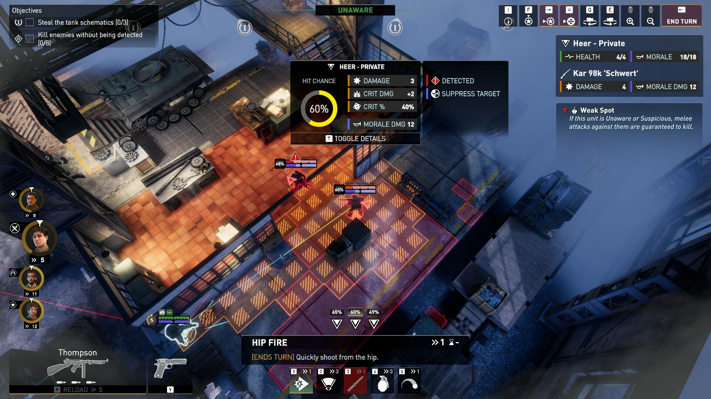
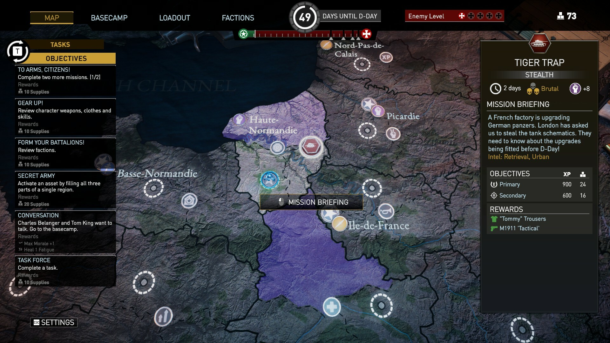
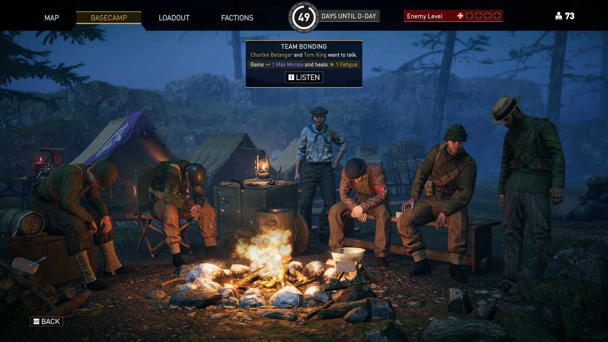
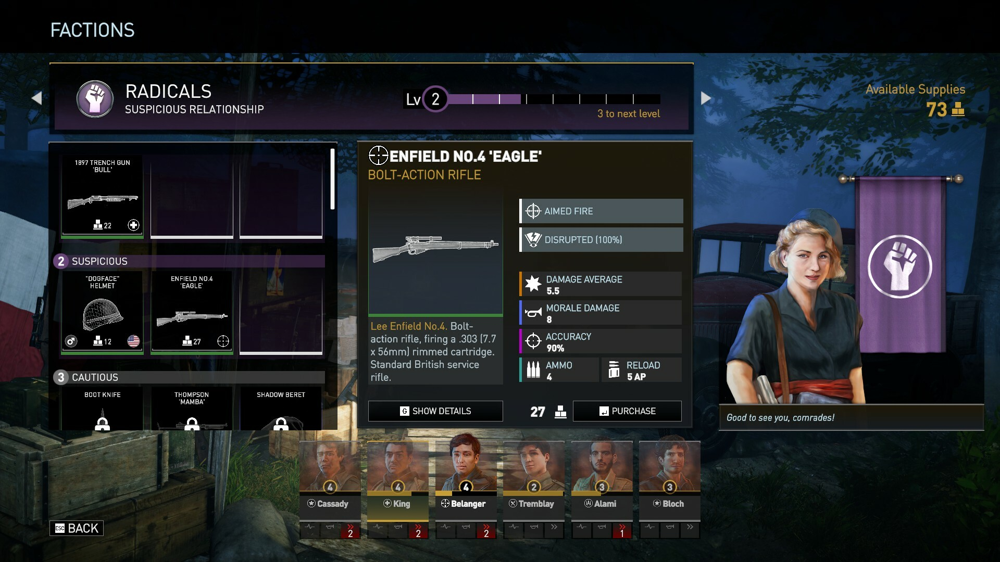

Classified: France ’44
Overview
Worked on Classified: France ’44 at Absolutely Games as a gameplay and UI programmer, contributing within an established production codebase and multidisciplinary development team.
Gameplay
Implemented gameplay features including additional weapons, skills and supporting mechanics, working with existing game systems and content.
Designer Tools
Developed and maintained internal tools used by designers to create levels, missions and game content, including tooling supporting mission creation and user-generated content systems.
UI
Worked across the HUD, map, menus, options and other supporting UI.
Production
Participated in code reviews, regular team playtests, debugging and bug fixing throughout development.





